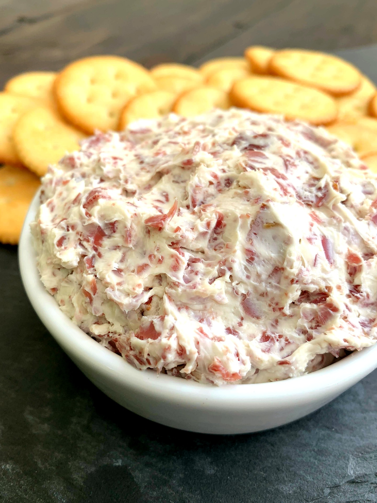
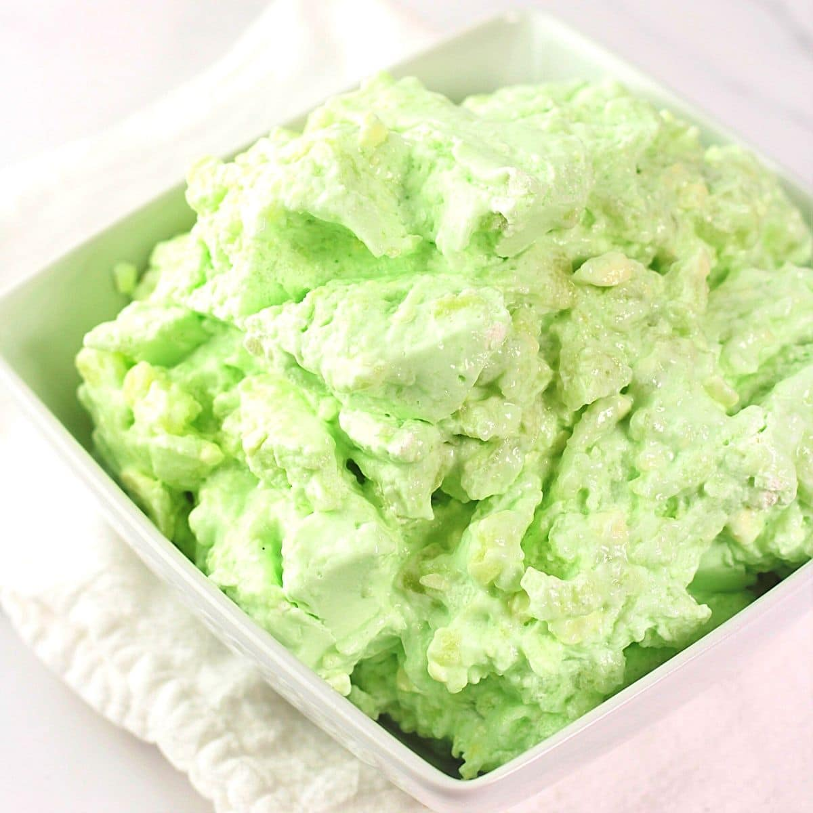

Recommended Appetizer and Dessert:
Appetizer: Chipped Beef Dip

- 2 8oz. Cream Cheese, softened
- 1 tsp. Garlic Powder
- 1/2 cup Sour Cream
- 3oz. Chipped Beef, shredded
- Small Red Onion, diced
- 1 4oz. can Green Chilies
- Blend sour cream and cream chees until combined
- Add garlic powder, chipped beef, and red onion.
- Fold together
- Can be used in a Cheese Ball
- Add a bit of milk to reach desired dip consistency
Dessert: Marvelous Fruit Mix-Up

- 3oz. Jello packet, any flavor
- 2 cups Ice Cudes
- 11oz. can Mandarin Orange Slices, drained
- 1/4 cup Walnuts or Pecans, chopped
- 3/4 cup Boiling Water
- 1 Cool Whip, thawed
- 1 cup Mini Mashmellows
- 15.5oz. can Crushed Pineapple, drained
- Dissolve gelatin in boiling water
- Add ice cubes and stir constantly until gelatin begind to thicken. About 3-5 minutes.
- Remove any unmelted ice and add whipped topping. Blend until smooth.
- Fold in oranges, marsh marshmellows, nuts, and pineapple. Reserve some fruit for a garnish, if desired.
- Transfer into a serving bowl or dessert glasses.
- Refridgerate until set.
Or search for your favorite here: